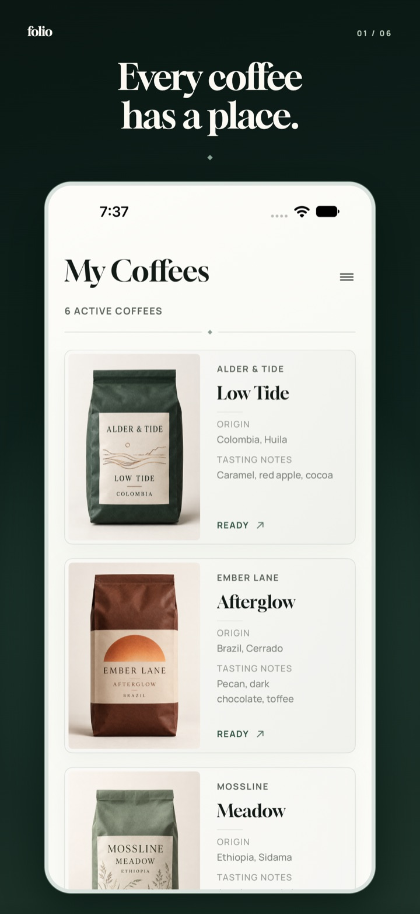
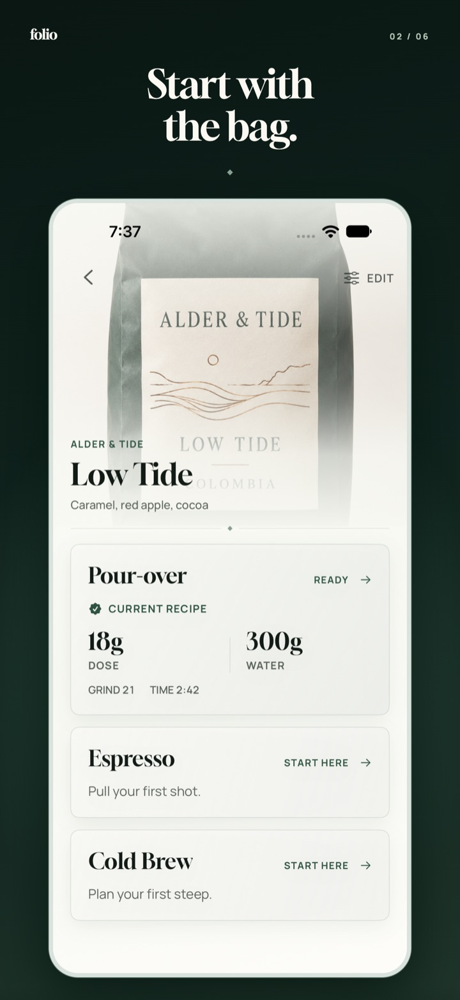
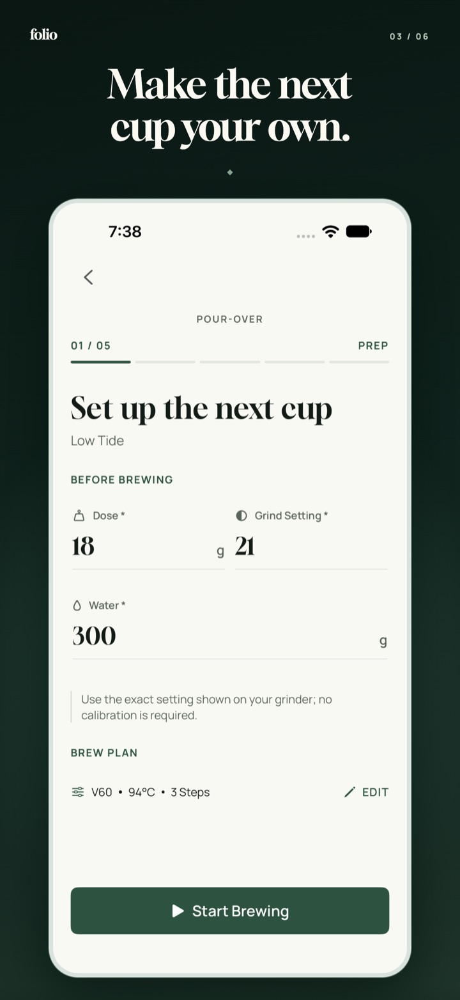
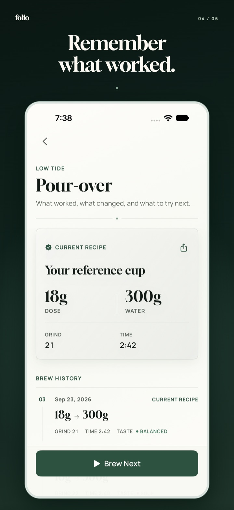
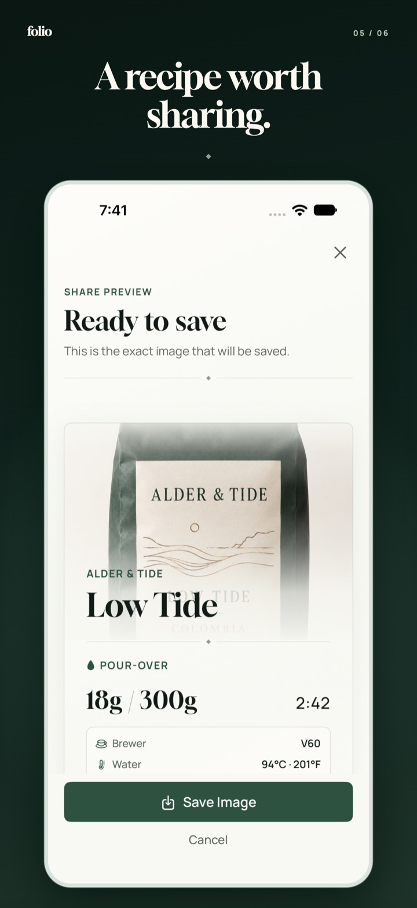
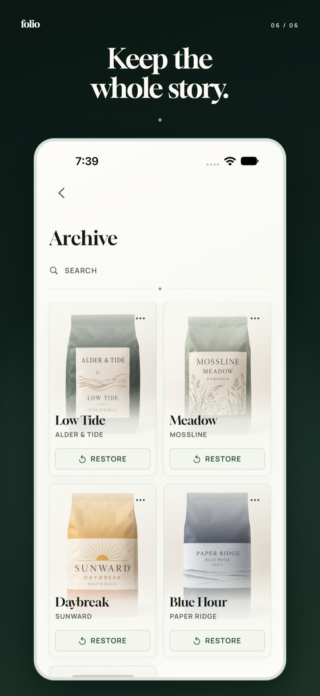

Start with the bag.
Keep the photo, roaster, origin, and tasting notes with the coffee they belong to.
Your coffee journal
Remember each coffee. Learn from each brew. Keep the recipes you love, and let your taste guide the next cup.

Inside folio
From the first photo of a bag to the recipe you make your own, folio keeps the small details together.
Keep the photo, roaster, origin, and tasting notes with the coffee they belong to.
Record pour-over, espresso, or cold brew, then reflect on how each cup tasted.
Save a recipe you love, learn from the last brew, and find your way back to it.
A closer look
Swipe to explore →




Your journal, yours
Made for your own pace.Your coffees, recipes, photos, and notes stay on your device. No account, no tracking, no cloud sync.